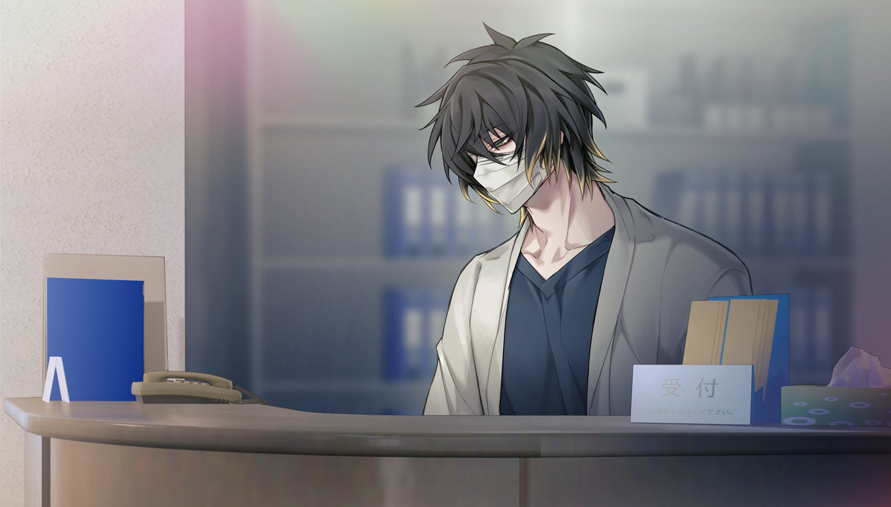
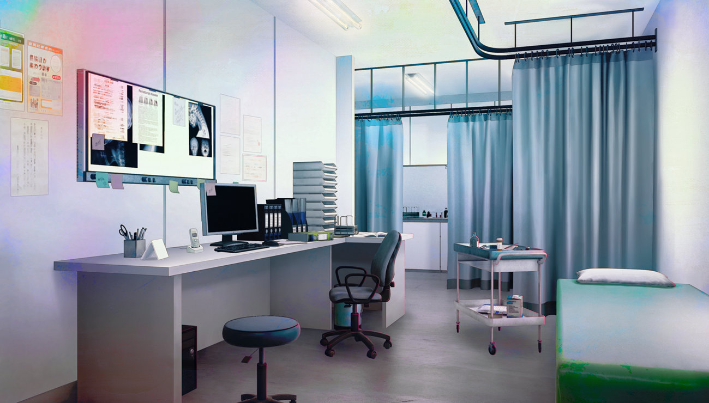
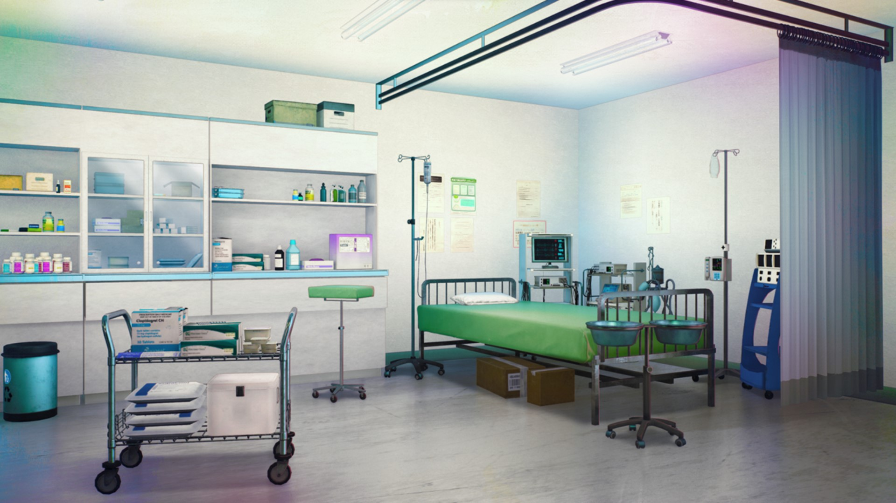
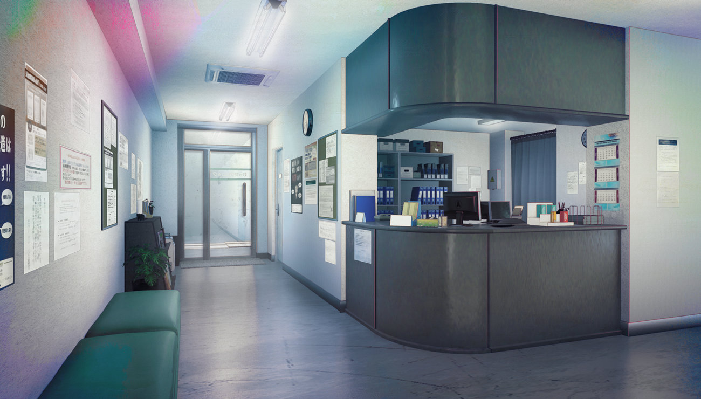
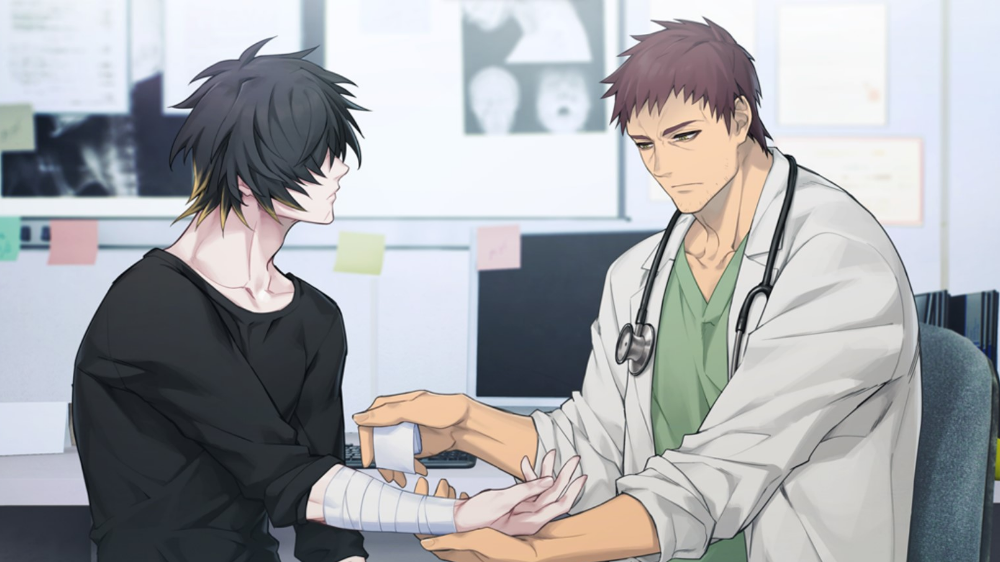

"Many Hands, Many Hearts & Many Lives Saved" : How we Work and Live While Saving Other's Lives Behind the Scenes!
Morning Routine

Every morning, I wake up at around 5:30 AM to prepare for work at the hospital. After a quick shower, I put on my neatly pressed medical uniform and check that my ID badge, stethoscope, and notepad are ready in my bag. Before leaving, I grab a cup of hot coffee to energize myself for the busy day ahead. The city streets are still quiet when I catch a jeepney to the hospital, watching the sunrise peek through the skyline.
When I arrive at the hospital, I head to the staff locker room to store my things and then check in with the nurse on duty for a quick handover from the night shift. The air smells faintly of disinfectant, and the halls are already alive with doctors, nurses, and patients starting their day. I take a moment to review the day’s schedule, sip the last of my coffee, and mentally prepare for my shift.
Midday Tasks & Projects



By midday, the hospital is bustling with activity. My main tasks include checking on patients, updating their charts, and assisting doctors during rounds. I also help monitor vital signs, administer medication, and make sure every patient is comfortable and well-attended to. Collaboration is key, I work closely with nurses, physicians, and laboratory staff to ensure every case is handled efficiently.
Sometimes, I’m assigned to special cases or projects, like managing patient data, organizing medical supplies, or mentoring new interns. During short breaks, I grab a quick lunch at the cafeteria with my coworkers, where we share stories, laugh about the day’s chaos, and recharge for the afternoon duties ahead. Even though the job is challenging, knowing that I’m helping others makes it fulfilling and meaningful every day.
Career Highlight Video
This video shows something interesting about my dream job:
Here, you’ll see how professionals work together in a clean and modern clinic to provide the best care for patients. From greeting clients with a warm smile to performing detailed procedures, every moment shows the importance of precision and compassion in this field. I admire how doctors and staffs not only treat the patient's problems but also help them regain confidence and flexibility. This video reminds me why I want to pursue this career, it’s about helping others be healthy again, happy, and reconnect those who have almost lost their connections with their loved ones.

A Story from My Dream Job
There’s one story that always stays with me, it’s about a doctor I’ve known since I was younger, someone around my parents’ age who became like a second father to me. He wasn’t the type to boast about his work, but you could see his dedication in the quiet way he cared for his patients. Once, I saw him stay late after his shift just to check on a sick child whose parents couldn’t afford full treatment. He didn’t ask for recognition, he simply smiled and said, “If you can help, even just one person a day, that’s already good enough for a start of a change.”
Ever since that day, it changed how I saw medicine. It wasn’t just about curing illnesses, and 'just medicine' but about compassion, being gentle, faith and standing beside people when they’re scared or in pain. He taught me that being a doctor isn’t only about knowledge and skill, but also heart. Seeing how he balanced warmth and wisdom made me realize I wanted to follow that same path. He was the total opposite of the type of person I am, although I still find myself looking up to him the most. Although he may not be someone who I would call my father, but growing up with his guidance and kindness helped shape the dream I’m chasing today.